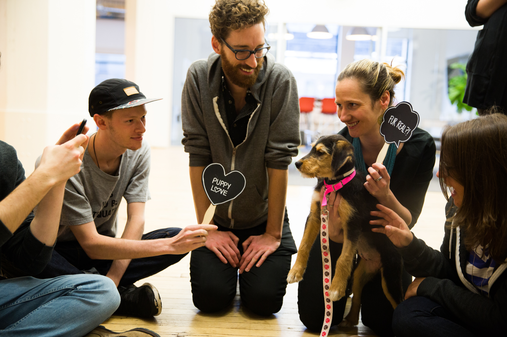

First Week Down
4th of February 2016
Well, I am in New York City... It has been an extremely busy first week and a great deal has happened already. I will do my best to fill you in without rambling on about nothing important. I suppose the appropriate place to start is right where I left you off - That being landing into JFK Airport. I arrived at about mid night on Tuesday the 26th, eventually getting to my Airbnb after waiting in an obnoxiously long line for a taxi. The cab ride in the middle of the night displayed the snow damage to me for the first time, however, too exhausted from my flight, I stumbled into the Airbnb bed and fell straight to sleep.
Wakey wakey... I arise to a response from a person I found on facebook, looking for someone to sublet a room in their apartment. Address not too far from my Airbnb, I ventured off to see the apartment. Not knowing anything about how safe areas are, the walking was a little unnerving I am not going to lie. The feeling of insecurity is amplified by being over 14,180 kilomters away from home, in New York City, surrounded by large, old buildings. Anyways... I saw the apartment and I was generally pretty happy with where it was in relation to the subway, as well as a few other things I was looking for. All the apartments in this particular building had been recently redone which meant it was secure as well as had new kitchens, bathrooms etc. The downside was that it was unfurnished - Kind of an issue with my complete lack of furnishings.
I moved on to the one other place I had organised to see. Don't get me wrong, I tried to contact many people but it is very difficult when the pace to move in and out of places is so freaking fast in NY. The next place was a relatively short walk from my Airbnb, So off I went and managed to pick up my first incredible New York food discovery - A banana french toast muffin for $3. I met the guy who I had been in contact with over the past few days, saw the apartment, talked for 15 minutes and that was pretty much it - I was sold. The apartment was great, close to the subway, fully furnished, not too expensive, friendly up and coming area, as well as having a laundry and supermarket nearby. I was told by a few people that when looking for an apartment in New York, and you find something you like, you should immediately take it. That is what I did - We basically agreed on the spot for how long and how much, moving in on Sunday the 31st of Jan.

I spent the next few days sorting out things like my American bank account, navigating the subway and seeing some sights. Times Square is what you would expect (lots of bilboards and tourists), would be cool to see at night though - I will be passing through again though, I am sure. I went to see Central Park in the snow with my cousin Rosa, which was great. Exploring Manhattan is a massive task, which will take many many weeks to make any kind of dent into experiencing the full potential of the city.

Sunday comes along quickly and it is time for me to move into my place! I cram all my things into my one suitcase and backpack and start walking towards Prospect Heights. Exciting stuff... I make my bed, get my essentials on to the shelves and try and grasp the fact that I am now a permanent resident in New York City. It definitely does not feel real whatsoever - I feel like I am just doing things in a different way but have not had that moment of realisation of where I am and how much of a massive change this all is.
Tomorrow I would have completed the first week at my internship Red Antler. A lot as well as not much has happened at work this week... Because the development team are pretty swamped with projects as of right now, in addition to me not knowing the languages they use for their build process, we decided that the best thing for me to do this week is to research the languages and processes, so that I can be integrated into the development workflow a lot easier. Esentially, so far I have been sitting in front of my laptop trying to learn as much as I can in an extremely short space of time. In saying this, I have met a load of extremely nice people already, had lunch at three different places, had Uber Puppies visit the office on Wednesday, and finally, experienced 30 minutes of relaxing office yoga this morning. What a week...

I will give you a few positive things I have discovered about living in New York for approximately 10 days. Number one is that I found out the kitchen in my apartment has a dishwasher, microwave as well as cooking oil, pots, pans and pretty much all the cooking utensils I need to prepare meals. Next thing is that I get a bit of excersise in my days that I am working as I have to walk to and from the subway station - About 4.5 km, which is pretty decent. I have a grocery store not far from me that has all the essentials I need. I even saw some Mainland NZ cheese there (extremely overpriced). I have started including eggs into my breakfast thanks to a recipe Emily gave me: 2 handfuls of rolled oats, 1 egg, 1 mashed banana, 1/2 chopped pear, all mixed with milk and microwaved. This is my new favourite staple breakfast and gives me a decent amount of energy for the morning.
It is funny because up until about now, I have basically been ticking things off my to do list. There was all the things I needed to do before coming to America, then finding an apartment was a big challenge, had to open my bank account, transfer money, go shopping for groceries, do laundry, unpack and start work. Now these things are done, I can actually start to enjoy exploring and experiencing this crazy place. That is the plan anyway!